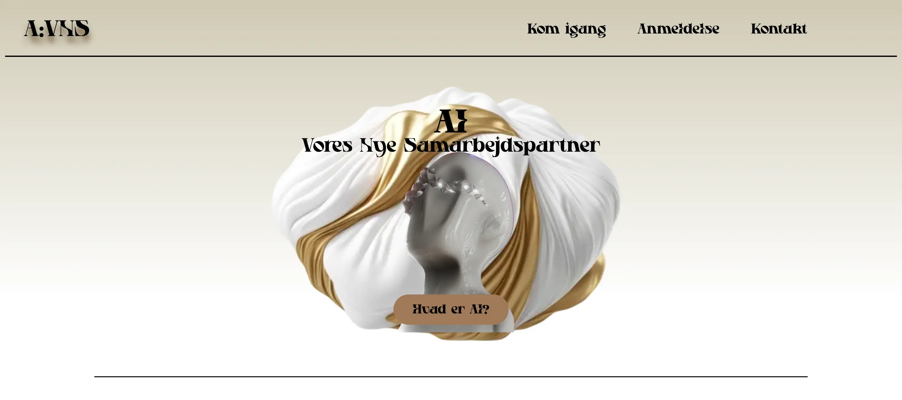

I tema 3 fik vi en grundlæggende forståelse indenfor User Experience Design (UX) og User Interface (UI), og forståelse mellem brugere og brugergrænseflader. Vi lærte vi at arbejde med udvalgte UX/UI-metoder, samt hvordan vi præsentere vores proces med design og udvikling af produkt/løsning og formidling af research- og testresultater.

I dette projekt skulle vi vælge et valgfrit emne som vi var interesserede i og kendte til. I mit tilfælde var det brugen af AI og hvordan man kan tage brug af det. Temaet bestod af 5 vigtige dele: Research og idé, digital prototype, kodet site, præsentation og dokumentation.
I dette projekt glemte desværre responsiv design og tog ikke tilgang til mobil version først. Derfor er mit emnesites layout kun til desktop.